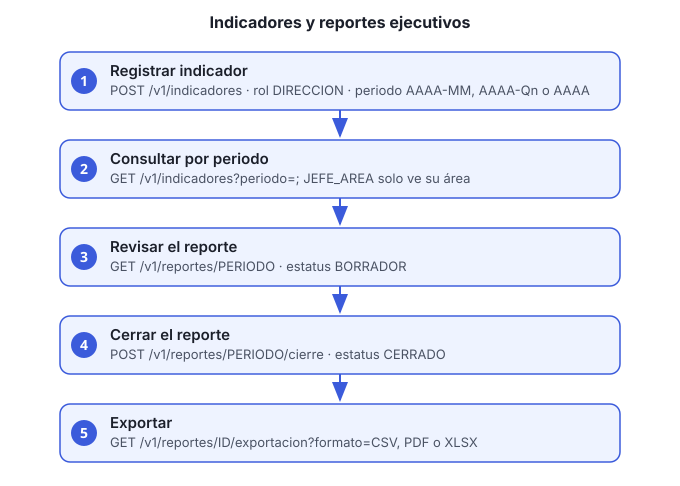

Objetivo: registrar los indicadores de cada área, consultarlos y generar el reporte mensual, que se puede exportar.
Servicio: reportes-ejecutivos-ms, bajo
/reportes-ejecutivos-ms/v1.

Roles
| Acción | Rol |
|---|---|
| Registrar indicador | DIRECCION |
| Consultar indicadores | DIRECCION (todas las áreas) o JEFE_AREA
(solo la suya) |
| Ver un reporte | DIRECCION o JEFE_AREA |
| Cerrar un reporte | DIRECCION |
| Exportar | DIRECCION |
Antes de empezar
- Usuario con el rol correspondiente. Para
JEFE_AREA, el usuario debe tener área asignada (guía 5). - El área debe coincidir con el enum de reportes:
VENTAS_ATENCION_CLIENTES,FINANZAS_CONTABILIDAD,OPERACIONES,COMPRAS_PROVEEDORES,ADMINISTRACION_LEGALoDIRECCION_GENERAL.
Pasos
Registra un indicador. Cada indicador tiene área, nombre, periodo, valor y la fecha de actualización de la fuente. El periodo acepta
AAAA-MM(mensual, como2026-10),AAAA-Qn(trimestral, como2026-Q4) oAAAA(anual):curl -s -X POST http://HOST/reportes-ejecutivos-ms/v1/indicadores \ -H "Authorization: Bearer ACCESS_TOKEN" -H "Content-Type: application/json" \ -d '{"area":"FINANZAS_CONTABILIDAD","nombre":"Cuentas por cobrar vencidas","periodo":"2026-10","valor":125000.50,"fuenteActualizadaUtc":"2026-11-02T18:00:00Z"}'Consulta los indicadores de un periodo. El periodo es obligatorio; el área es opcional:
curl -s "http://HOST/reportes-ejecutivos-ms/v1/indicadores?periodo=2026-10&area=FINANZAS_CONTABILIDAD" \ -H "Authorization: Bearer ACCESS_TOKEN"Un
JEFE_AREAsolo ve su área aunque pida otra: el servicio usa el claimareade su token.Revisa el reporte del periodo:
curl -s http://HOST/reportes-ejecutivos-ms/v1/reportes/2026-10 \ -H "Authorization: Bearer ACCESS_TOKEN"La respuesta muestra el estatus del reporte y los indicadores consolidados por área.
Cierra el reporte cuando todas las áreas hayan registrado sus indicadores (rol
DIRECCION):curl -s -X POST http://HOST/reportes-ejecutivos-ms/v1/reportes/2026-10/cierre \ -H "Authorization: Bearer ACCESS_TOKEN"Un reporte cerrado no cambia. Si falta un dato, corrígelo antes del cierre.
Exporta el reporte (rol
DIRECCION). Usa el id del reporte que devuelve el paso 3. El formato va enformato:CSV(por defecto),PDFoXLSX:curl -s "http://HOST/reportes-ejecutivos-ms/v1/reportes/REPORTE_ID/exportacion?formato=XLSX" \ -H "Authorization: Bearer ACCESS_TOKEN" -OJ-OJguarda el archivo con el nombre que envía el servicio.
Verificación
GET /v1/indicadores?periodo=PERIODOlista el indicador recién registrado.GET /v1/reportes/PERIODOmuestra el estatus y los consolidados.
Problemas comunes
| Síntoma | Causa | Qué hacer |
|---|---|---|
| 403 al consultar | JEFE_AREA sin área, o área distinta a la del enum |
Asigna el área correcta (guía 5) |
| 403 en un usuario con área válida | El token es anterior a la asignación | Inicia sesión de nuevo |
| El indicador no aparece en el consolidado | El periodo o el área no coinciden | Revisa periodo y area |
| Reporte no se puede cerrar o cambiar | Ya está cerrado | Un reporte cerrado es inmutable; registra el ajuste en el periodo siguiente |